Total v Nuclear
Briana Mittleman
5/2/2019
Last updated: 2019-09-06
Checks: 6 1
Knit directory: apaQTL/analysis/
This reproducible R Markdown analysis was created with workflowr (version 1.4.0). The Checks tab describes the reproducibility checks that were applied when the results were created. The Past versions tab lists the development history.
Great! Since the R Markdown file has been committed to the Git repository, you know the exact version of the code that produced these results.
The global environment had objects present when the code in the R Markdown file was run. These objects can affect the analysis in your R Markdown file in unknown ways. For reproduciblity it’s best to always run the code in an empty environment. Use wflow_publish or wflow_build to ensure that the code is always run in an empty environment.
The following objects were defined in the global environment when these results were created:
| Name | Class | Size |
|---|---|---|
| data | environment | 56 bytes |
| env | environment | 56 bytes |
The command set.seed(20190411) was run prior to running the code in the R Markdown file. Setting a seed ensures that any results that rely on randomness, e.g. subsampling or permutations, are reproducible.
Great job! Recording the operating system, R version, and package versions is critical for reproducibility.
Nice! There were no cached chunks for this analysis, so you can be confident that you successfully produced the results during this run.
Great job! Using relative paths to the files within your workflowr project makes it easier to run your code on other machines.
Great! You are using Git for version control. Tracking code development and connecting the code version to the results is critical for reproducibility. The version displayed above was the version of the Git repository at the time these results were generated.
Note that you need to be careful to ensure that all relevant files for the analysis have been committed to Git prior to generating the results (you can use wflow_publish or wflow_git_commit). workflowr only checks the R Markdown file, but you know if there are other scripts or data files that it depends on. Below is the status of the Git repository when the results were generated:
Ignored files:
Ignored: .DS_Store
Ignored: .Rhistory
Ignored: .Rproj.user/
Ignored: data/.DS_Store
Ignored: docs/.DS_Store
Ignored: docs/figure/.DS_Store
Ignored: output/.DS_Store
Untracked files:
Untracked: .Rprofile
Untracked: ._.DS_Store
Untracked: .gitignore
Untracked: @
Untracked: _workflowr.yml
Untracked: analysis/._PASdescriptiveplots.Rmd
Untracked: analysis/._cuttoffPercUsage.Rmd
Untracked: analysis/APApeak_Phenotype_GeneLocAnno.Nuclear.5perc.fc.gz.qqnorm.allChrom
Untracked: analysis/APApeak_Phenotype_GeneLocAnno.Total.5perc.fc.gz.qqnorm.allChrom
Untracked: analysis/QTLexampleplots.Rmd
Untracked: analysis/cuttoffPercUsage.Rmd
Untracked: analysis/eQTLoverlap.Rmd
Untracked: analysis/interpret verify bam.Rmd
Untracked: analysis/interpret_verifybam.Rmd
Untracked: analysis/mergeRNA.Rmd
Untracked: analysis/oldstuffNotNeeded.Rmd
Untracked: analysis/remove_badlines.Rmd
Untracked: analysis/totalspec.Rmd
Untracked: apaQTL.Rproj
Untracked: code/.NascentRNAdtPlotFirstintronicPAS.sh.swp
Untracked: code/._ApaQTL_nominalNonnorm.sh
Untracked: code/._BothFracDTPlotGeneRegions.sh
Untracked: code/._BothFracDTPlotGeneRegions_normalized.sh
Untracked: code/._EandPqtl_perm.sh
Untracked: code/._EandPqtls.sh
Untracked: code/._FC_NucintornUpandDown.sh
Untracked: code/._FC_UTR.sh
Untracked: code/._FC_intornUpandDownsteamPAS.sh
Untracked: code/._FC_nascentseq.sh
Untracked: code/._FC_newPeaks_olddata.sh
Untracked: code/._HMMpermuteTotal.py
Untracked: code/._HmmPermute.py
Untracked: code/._IntronicPASDT.sh
Untracked: code/._LC_samplegroups.py
Untracked: code/._LD_qtl.sh
Untracked: code/._LD_snpsproxy.sh
Untracked: code/._NascentRNAdtPlot.sh
Untracked: code/._NascentRNAdtPlot3UTRPAS.sh
Untracked: code/._NascentRNAdtPlotExcludeFirstintronicPAS.sh
Untracked: code/._NascentRNAdtPlotNucPAS.sh
Untracked: code/._NascentRNAdtPlotTotPAS.sh
Untracked: code/._NascentRNAdtPlotintronicPAS.sh
Untracked: code/._NascnetRNAdtPlotPAS.sh
Untracked: code/._NetSeq_fourthintronDT.sh
Untracked: code/._NomResfromPASSNP.py
Untracked: code/._NuclearPAS_5per.bed.py
Untracked: code/._PTTfacetboxplots.R
Untracked: code/._PrematureQTLNominal.sh
Untracked: code/._PrematureQTLPermuted.sh
Untracked: code/._QTL2bed.py
Untracked: code/._QTL2bed_withstrand.py
Untracked: code/._RNAbam2bw.sh
Untracked: code/._RNAseqDTplot.sh
Untracked: code/._RunRes2PAS.sh
Untracked: code/._SAF215upbed.py
Untracked: code/._SnakefilePAS
Untracked: code/._SnakefilefiltPAS
Untracked: code/._TESplots100bp.sh
Untracked: code/._TESplots150bp.sh
Untracked: code/._TESplots200bp.sh
Untracked: code/._TotalPAS_5perc.bed.py
Untracked: code/._Untitled
Untracked: code/._ZipandTabPheno.sh
Untracked: code/._aAPAqtl_nominal39ind.sh
Untracked: code/._annotatePacBioPASregion.sh
Untracked: code/._annotatedPAS2bed.py
Untracked: code/._apaInPandE.py
Untracked: code/._apaQTLCorrectPvalMakeQQ.R
Untracked: code/._apaQTLCorrectpval_6or7a.R
Untracked: code/._apaQTL_Nominal.sh
Untracked: code/._apaQTL_nominalv67.sh
Untracked: code/._apaQTL_permuted.sh
Untracked: code/._apaQTL_permuted_test6A7A.sh
Untracked: code/._apainRibo.py
Untracked: code/._assignNucIntonpeak2intronlocs.sh
Untracked: code/._assignTotIntronpeak2intronlocs.sh
Untracked: code/._bam2BW_5primemost.sh
Untracked: code/._bed2saf.py
Untracked: code/._bothFracDTplot1stintron.sh
Untracked: code/._bothFracDTplot4thintron.sh
Untracked: code/._bothFrac_FC.sh
Untracked: code/._callPeaksYL.py
Untracked: code/._changeRibonomQTLres2genename.py
Untracked: code/._changenomQTLres2geneName.py
Untracked: code/._chooseAnno2PAS_pacbio.py
Untracked: code/._chooseAnno2SAF.py
Untracked: code/._chooseSignalSite
Untracked: code/._chooseSignalSite.py
Untracked: code/._closestannotated.sh
Untracked: code/._closestannotated_byfrac.sh
Untracked: code/._cluster.json
Untracked: code/._clusterPAS.json
Untracked: code/._clusterfiltPAS.json
Untracked: code/._codingdms2bed.py
Untracked: code/._config.yaml
Untracked: code/._config2.yaml
Untracked: code/._configOLD.yaml
Untracked: code/._convertNominal2SNPLOC.py
Untracked: code/._convertNominal2SNPloc2Versions.py
Untracked: code/._convertNumeric.py
Untracked: code/._correctNomeqtl.R
Untracked: code/._createPlinkSampfile.py
Untracked: code/._dag.pdf
Untracked: code/._eQTL_switch2snploc.py
Untracked: code/._eQTLgenestestedapa.py
Untracked: code/._encodeRNADTplots.sh
Untracked: code/._extractGenotypes.py
Untracked: code/._extractseqfromqtlfastq.py
Untracked: code/._fc2leafphen.py
Untracked: code/._fc_filteredPAS6and7As.sh
Untracked: code/._fifteenBPupstreamPAS.py
Untracked: code/._fiftyBPupstreamPAS.py
Untracked: code/._filter5perc.R
Untracked: code/._filter5percPheno.py
Untracked: code/._filterLDsnps.py
Untracked: code/._filterMPPAS.py
Untracked: code/._filterMPPAS_15.py
Untracked: code/._filterMPPAS_15_7As.py
Untracked: code/._filterMPPAS_50.py
Untracked: code/._filterSAFforMP.py
Untracked: code/._filterpeaks.py
Untracked: code/._finalPASbed2SAF.py
Untracked: code/._fix4su304corr.py
Untracked: code/._fix4su604corr.py
Untracked: code/._fix4sukalisto.py
Untracked: code/._fixExandUnexeQTL
Untracked: code/._fixExandUnexeQTL.py
Untracked: code/._fixFChead.py
Untracked: code/._fixFChead_bothfrac.py
Untracked: code/._fixFChead_short.py
Untracked: code/._fixH3k12ac.py
Untracked: code/._fixPASregionSNPs.py
Untracked: code/._fixRNAhead4corr.py
Untracked: code/._fixRNAkalisto.py
Untracked: code/._fixgroupedtranscript.py
Untracked: code/._fixhead_netseqfc.py
Untracked: code/._getAPAfromanyeQTL.py
Untracked: code/._getApapval4eqtl.py
Untracked: code/._getApapval4eqtl_unexp.py
Untracked: code/._getApapval4eqtl_version67.py
Untracked: code/._getDownstreamIntronNuclear.py
Untracked: code/._getIntronDownstreamPAS.py
Untracked: code/._getIntronUpstreamPAS.py
Untracked: code/._getQTLalleles.py
Untracked: code/._getQTLfastq.sh
Untracked: code/._getUpstreamIntronNuclear.py
Untracked: code/._grouptranscripts.py
Untracked: code/._intersectVCFandupPAS.sh
Untracked: code/._keep5perMAF.py
Untracked: code/._keepSNP_vcf.sh
Untracked: code/._make5percPeakbed.py
Untracked: code/._makeFileID.py
Untracked: code/._makePheno.py
Untracked: code/._makeSAFbothfrac5perc.py
Untracked: code/._makeSNP2rsidfile.py
Untracked: code/._makeeQTLempirical_unexp.py
Untracked: code/._makeeQTLempiricaldist.py
Untracked: code/._makegencondeTSSfile.py
Untracked: code/._mapSSsnps2PAS.sh
Untracked: code/._mergRNABam.sh
Untracked: code/._mergeAllBam.sh
Untracked: code/._mergeBW_norm.sh
Untracked: code/._mergeBamNascent.sh
Untracked: code/._mergeByFracBam.sh
Untracked: code/._mergePeaks.sh
Untracked: code/._mnase1stintron.sh
Untracked: code/._mnaseDT_fourthintron.sh
Untracked: code/._namePeaks.py
Untracked: code/._netseqDTplot1stIntron.sh
Untracked: code/._netseqFC.sh
Untracked: code/._nucQTLGWAS.py
Untracked: code/._nucSpecQTLineData.py
Untracked: code/._nucSpeceffectsize.py
Untracked: code/._pQTLsotherdata.py
Untracked: code/._pacbioDT.sh
Untracked: code/._pacbioIntronicDT.sh
Untracked: code/._parseBestbamid.py
Untracked: code/._peak2PAS.py
Untracked: code/._peakFC.sh
Untracked: code/._pheno2countonly.R
Untracked: code/._phenoQTLfromlist.py
Untracked: code/._processYRIgen.py
Untracked: code/._pttQTLsinapaQTL.py
Untracked: code/._qtlRegionseq.sh
Untracked: code/._qtlsPvalOppFrac.py
Untracked: code/._quantassign2parsedpeak.py
Untracked: code/._removeXfromHmm.py
Untracked: code/._removeloc_pheno.py
Untracked: code/._riboQTL.sh
Untracked: code/._runCorrectNomEqtl.sh
Untracked: code/._runHMMpermuteAPAqtls.sh
Untracked: code/._runHMMpermuteeQTLS.sh
Untracked: code/._runMakeEmpiricaleQTL_unexp.sh
Untracked: code/._runMakeeQTLempirical.sh
Untracked: code/._run_bam2bw_all3prime.sh
Untracked: code/._run_bam2bw_extra3.sh
Untracked: code/._run_bestbamid.sj
Untracked: code/._run_filtersnpLD.sh
Untracked: code/._run_getAPAfromeQTL_version6.7.sh
Untracked: code/._run_getApaPval4eqtl.sh
Untracked: code/._run_getapafromeQTL.py
Untracked: code/._run_getapafromeQTL.sh
Untracked: code/._run_getapapval4eqtl_unexp.sh
Untracked: code/._run_leafcutterDiffIso.sh
Untracked: code/._run_prxySNP.sh
Untracked: code/._run_pttfacetboxplot.sh
Untracked: code/._run_sepUsagephen.sh
Untracked: code/._run_sepgenobychrom.sh
Untracked: code/._run_verifybam.sh
Untracked: code/._selectNominalPvalues.py
Untracked: code/._sepUsagePhen.py
Untracked: code/._sepgenobychrom.py
Untracked: code/._snakemakePAS.batch
Untracked: code/._snakemakefiltPAS.batch
Untracked: code/._sortindexRNAbam.sh
Untracked: code/._submit-snakemakePAS.sh
Untracked: code/._submit-snakemakefiltPAS.sh
Untracked: code/._subsetAPAnotEorPgene.py
Untracked: code/._subsetAPAnotEorPgene_2versions.py
Untracked: code/._subsetApanoteGene.py
Untracked: code/._subsetApanoteGene_2versions.py
Untracked: code/._subsetUnexplainedeQTLs.py
Untracked: code/._subsetVCF_SS.sh
Untracked: code/._subsetVCF_noSSregions.sh
Untracked: code/._subsetVCF_upstreamPAS.sh
Untracked: code/._subset_diffisopheno.py
Untracked: code/._subsetpermAPAwithGenelist.py
Untracked: code/._subsetpermAPAwithGenelist_2versions.py
Untracked: code/._subsetvcf_otherreg.sh
Untracked: code/._subsetvcf_permSS.sh
Untracked: code/._subtrachfiveprimeUTR.sh
Untracked: code/._subtractExons.sh
Untracked: code/._subtractfiveprimeUTR.sh
Untracked: code/._tabixSNPS.sh
Untracked: code/._tenBPupstreamPAS.py
Untracked: code/._testVerifyBam.sh
Untracked: code/._totSeceffectsize.py
Untracked: code/._twentyBPupstreamPAS.py
Untracked: code/._utrdms2saf.py
Untracked: code/._vcf2bed.py
Untracked: code/._verifyBam18517N.sh
Untracked: code/._verifyBam18517T.sh
Untracked: code/._verifyBam19128N.sh
Untracked: code/._verifyBam19128T.sh
Untracked: code/._wrap_verifybam.sh
Untracked: code/._writePTTexamplecode.py
Untracked: code/._writePTTexamplecode.sh
Untracked: code/.pversion
Untracked: code/.snakemake/
Untracked: code/1
Untracked: code/APAqtl_nominal.err
Untracked: code/APAqtl_nominal.out
Untracked: code/APAqtl_nominal_39.err
Untracked: code/APAqtl_nominal_39.out
Untracked: code/APAqtl_nominal_nonNorm.err
Untracked: code/APAqtl_nominal_nonNorm.out
Untracked: code/APAqtl_nominal_versions67.err
Untracked: code/APAqtl_nominal_versions67.out
Untracked: code/APAqtl_permuted.err
Untracked: code/APAqtl_permuted.out
Untracked: code/APAqtl_permuted_versions67.err
Untracked: code/APAqtl_permuted_versions67.out
Untracked: code/ApaQTL_nominalNonnorm.sh
Untracked: code/BothFracDTPlot1stintron.err
Untracked: code/BothFracDTPlot1stintron.out
Untracked: code/BothFracDTPlot4stintron.err
Untracked: code/BothFracDTPlot4stintron.out
Untracked: code/BothFracDTPlotGeneRegions.err
Untracked: code/BothFracDTPlotGeneRegions.out
Untracked: code/BothFracDTPlotGeneRegions_norm.err
Untracked: code/BothFracDTPlotGeneRegions_norm.out
Untracked: code/BothFracDTPlotGeneRegions_normalized.sh
Untracked: code/DistPAS2Sig.py
Untracked: code/EandPqtl.err
Untracked: code/EandPqtl.out
Untracked: code/EandPqtl_perm.sh
Untracked: code/EandPqtls.sh
Untracked: code/EncodeRNADTPlotGeneRegions.err
Untracked: code/EncodeRNADTPlotGeneRegions.out
Untracked: code/FC_NucintornUpandDown.sh
Untracked: code/FC_NucintronPASupandDown.err
Untracked: code/FC_NucintronPASupandDown.out
Untracked: code/FC_UTR.err
Untracked: code/FC_UTR.out
Untracked: code/FC_UTR.sh
Untracked: code/FC_intornUpandDownsteamPAS.sh
Untracked: code/FC_intronPASupandDown.err
Untracked: code/FC_intronPASupandDown.out
Untracked: code/FC_nascent.err
Untracked: code/FC_nascentout
Untracked: code/FC_nascentseq.sh
Untracked: code/FC_newPAS_olddata.err
Untracked: code/FC_newPAS_olddata.out
Untracked: code/FC_newPeaks_olddata.sh
Untracked: code/HMMpermuteTotal.py
Untracked: code/HmmPermute.p
Untracked: code/HmmPermute.py
Untracked: code/IntronicPASDT.err
Untracked: code/IntronicPASDT.out
Untracked: code/IntronicPASDT.sh
Untracked: code/LC_samplegroups.py
Untracked: code/LD_qtl.sh
Untracked: code/LD_snpsproxy.sh
Untracked: code/LD_vcftools.hap.out
Untracked: code/NascentDTPlotGeneRegions.err
Untracked: code/NascentDTPlotGeneRegions.out
Untracked: code/NascentDTPlotPAS.err
Untracked: code/NascentDTPlotPAS.out
Untracked: code/NascentDTPlotPAS_3utr.err
Untracked: code/NascentDTPlotPAS_3utr.out
Untracked: code/NascentDTPlotPAS_firstintron.err
Untracked: code/NascentDTPlotPAS_firstintron.out
Untracked: code/NascentDTPlotPAS_intron.err
Untracked: code/NascentDTPlotPAS_intron.out
Untracked: code/NascentDTPlotPAS_nuc.err
Untracked: code/NascentDTPlotPAS_nuc.out
Untracked: code/NascentDTPlotPAS_tot.err
Untracked: code/NascentDTPlotPAS_tot.out
Untracked: code/NascentRNAdtPlot.sh
Untracked: code/NascentRNAdtPlot3UTRPAS.sh
Untracked: code/NascentRNAdtPlotExcludeFirstintronicPAS.sh
Untracked: code/NascentRNAdtPlotFirstintronicPAS.sh
Untracked: code/NascentRNAdtPlotNucPAS.sh
Untracked: code/NascentRNAdtPlotTotPAS.sh
Untracked: code/NascentRNAdtPlotintronicPAS.sh
Untracked: code/NascnetRNAdtPlotPAS.sh
Untracked: code/NetSeq_fourthintronDT.sh
Untracked: code/NomResfromPASSNP.py
Untracked: code/NuclearPAS_5per.bed.py
Untracked: code/Nuclear_example.err
Untracked: code/Nuclear_example.out
Untracked: code/PACbioDT.err
Untracked: code/PACbioDT.out
Untracked: code/PACbioDTitronic.err
Untracked: code/PACbioDTitronic.out
Untracked: code/PTTfacetboxplots.R
Untracked: code/PrematureQTLNominal.sh
Untracked: code/PrematureQTLPermuted.sh
Untracked: code/Prematureqtl_nominal.err
Untracked: code/Prematureqtl_nominal.out
Untracked: code/Prematureqtl_permuted.err
Untracked: code/Prematureqtl_permuted.out
Untracked: code/QTL2bed.py
Untracked: code/QTL2bed_withstrand.py
Untracked: code/README.md
Untracked: code/RNABam2BW.err
Untracked: code/RNABam2BW.out
Untracked: code/RNAbam2bw.sh
Untracked: code/RNAseqDTPlotGeneRegions.err
Untracked: code/RNAseqDTPlotGeneRegions.out
Untracked: code/RNAseqDTplot.sh
Untracked: code/Rplots.pdf
Untracked: code/RunRes2PAS.sh
Untracked: code/SAF215upbed.py
Untracked: code/SAF215upbed_gen.py
Untracked: code/Script4NuclearPTTqtlexamples.sh
Untracked: code/Script4NuclearQTLexamples.sh
Untracked: code/Script4TotalPTTqtlexamples.sh
Untracked: code/Script4TotalQTLexamples.sh
Untracked: code/TESplots100bp.err
Untracked: code/TESplots100bp.out
Untracked: code/TESplots100bp.sh
Untracked: code/TESplots150bp.err
Untracked: code/TESplots150bp.out
Untracked: code/TESplots150bp.sh
Untracked: code/TESplots200bp.err
Untracked: code/TESplots200bp.out
Untracked: code/TESplots200bp.sh
Untracked: code/TotalPAS_5perc.bed.py
Untracked: code/Total_example.err
Untracked: code/Total_example.out
Untracked: code/Untitled
Untracked: code/Upstream100Bases_general.py
Untracked: code/YRI_LCL.vcf.gz
Untracked: code/YRI_LCL_chr1.vcf.gz.log
Untracked: code/YRI_LCL_chr1.vcf.gz.recode.vcf
Untracked: code/ZipandTabPheno.sh
Untracked: code/aAPAqtl_nominal39ind.sh
Untracked: code/annotatePacBioPASregion.sh
Untracked: code/annotatedPAS2bed.py
Untracked: code/annotatedPASregion.err
Untracked: code/annotatedPASregion.out
Untracked: code/apaInPandE.py
Untracked: code/apaQTLCorrectPvalMakeQQ_4pc.R
Untracked: code/apaQTLCorrectpval_6or7a.R
Untracked: code/apaQTL_Nominal_4pc.sh
Untracked: code/apaQTL_nominalv67.sh
Untracked: code/apaQTL_permuted.4pc.sh
Untracked: code/apaQTL_permuted_test6A7A.sh
Untracked: code/apafacetboxplots.R
Untracked: code/apainRibo.py
Untracked: code/apaqtlfacetboxplots.R
Untracked: code/assignNucIntonpeak2intronlocs.sh
Untracked: code/assignPeak2Intronicregion.err
Untracked: code/assignPeak2Intronicregion.out
Untracked: code/assignTotIntronpeak2intronlocs.sh
Untracked: code/assigntotPeak2Intronicregion.err
Untracked: code/assigntotPeak2Intronicregion.out
Untracked: code/bam2BW_5primemost.sh
Untracked: code/bam2bw.err
Untracked: code/bam2bw.out
Untracked: code/bam2bw_5primemost.err
Untracked: code/bam2bw_5primemost.out
Untracked: code/binary_fileset.log
Untracked: code/bothFracDTplot1stintron.sh
Untracked: code/bothFracDTplot4thintron.sh
Untracked: code/bothFrac_FC.err
Untracked: code/bothFrac_FC.out
Untracked: code/bothFrac_FC.sh
Untracked: code/callSHscripts.txt
Untracked: code/changePermQTLres2geneName.py
Untracked: code/changeRibonomQTLres2genename.py
Untracked: code/changenomQTLres2geneName.py
Untracked: code/chooseAnno2PAS_pacbio.py
Untracked: code/closestannotated.err
Untracked: code/closestannotated.out
Untracked: code/closestannotated.sh
Untracked: code/closestannotated_byfrac.sh
Untracked: code/closestannotatedbyfrac.err
Untracked: code/closestannotatedbyfrac.out
Untracked: code/codingdms2bed.py
Untracked: code/convertNominal2SNPLOC.py
Untracked: code/convertNominal2SNPloc2Versions.py
Untracked: code/correctNomeqtl.R
Untracked: code/createPlinkSampfile.py
Untracked: code/dag.pdf
Untracked: code/dagPAS.pdf
Untracked: code/dagfiltPAS.pdf
Untracked: code/eQTL_switch2snploc.py
Untracked: code/eQTLgenestestedapa.py
Untracked: code/encodeRNADTplots.sh
Untracked: code/environmentLeaf.yaml
Untracked: code/extractGenotypes.py
Untracked: code/extractseqfromqtlfastq.py
Untracked: code/fc2leafphen.py
Untracked: code/fc_filteredPAS6and7As.sh
Untracked: code/fifteenBPupstreamPAS.py
Untracked: code/fiftyBPupstreamPAS.py
Untracked: code/filterLDsnps.py
Untracked: code/filterMPPAS.py
Untracked: code/filterMPPAS_15.py
Untracked: code/filterMPPAS_15_7As.py
Untracked: code/filterMPPAS_50.py
Untracked: code/filterSAFforMP.py
Untracked: code/filterSAFforMP_gen.py
Untracked: code/finalPASbed2SAF.py
Untracked: code/findbuginpeaks.R
Untracked: code/fix4su304corr.py
Untracked: code/fix4su604corr.py
Untracked: code/fix4sukalisto.py
Untracked: code/fixExandUnexeQTL
Untracked: code/fixExandUnexeQTL.py
Untracked: code/fixFChead_bothfrac.py
Untracked: code/fixFChead_short.py
Untracked: code/fixFChead_summary.py
Untracked: code/fixH3k12ac.py
Untracked: code/fixPASregionSNPs.py
Untracked: code/fixRNAhead4corr.py
Untracked: code/fixRNAkalisto.py
Untracked: code/fixgroupedtranscript.py
Untracked: code/fixhead_netseqfc.py
Untracked: code/genotypesYRI.gen.proc.keep.vcf.log
Untracked: code/genotypesYRI.gen.proc.keep.vcf.recode.vcf
Untracked: code/get100upPAS.py
Untracked: code/getAPAfromanyeQTL.py
Untracked: code/getApapval4eqtl.py
Untracked: code/getApapval4eqtl_unexp.py
Untracked: code/getApapval4eqtl_version67.py
Untracked: code/getDownstreamIntronNuclear.py
Untracked: code/getIntronDownstreamPAS.py
Untracked: code/getIntronUpstreamPAS.py
Untracked: code/getQTLalleles.py
Untracked: code/getQTLfastq.sh
Untracked: code/getSeq100up.sh
Untracked: code/getUpstreamIntronNuclear.py
Untracked: code/getseq100up.err
Untracked: code/getseq100up.out
Untracked: code/grouptranscripts.err
Untracked: code/grouptranscripts.out
Untracked: code/grouptranscripts.py
Untracked: code/intersectPAS_ssSNPS.err
Untracked: code/intersectPAS_ssSNPS.out
Untracked: code/intersectVCFPAS.err
Untracked: code/intersectVCFPAS.out
Untracked: code/intersectVCFandupPAS.sh
Untracked: code/keep5perMAF.py
Untracked: code/keepSNP_vcf.sh
Untracked: code/log/
Untracked: code/makeSAFbothfrac5perc.py
Untracked: code/makeSNP2rsidfile.py
Untracked: code/makeeQTLempirical_unexp.py
Untracked: code/makeeQTLempiricaldist.py
Untracked: code/makegencondeTSSfile.py
Untracked: code/mapSSsnps2PAS.sh
Untracked: code/mergRNABam.sh
Untracked: code/mergeBW_norm.sh
Untracked: code/mergeBWnorm.err
Untracked: code/mergeBWnorm.out
Untracked: code/mergeBamNacent.err
Untracked: code/mergeBamNacent.out
Untracked: code/mergeBamNascent.sh
Untracked: code/mergeRNAbam.err
Untracked: code/mergeRNAbam.out
Untracked: code/mnase1stintron.sh
Untracked: code/mnaseDTPlot1stintron.err
Untracked: code/mnaseDTPlot1stintron.out
Untracked: code/mnaseDTPlot4thintron.err
Untracked: code/mnaseDTPlot4thintron.out
Untracked: code/mnaseDT_fourthintron.sh
Untracked: code/netDTPlot4thintron.out
Untracked: code/netseqDTplot1stIntron.sh
Untracked: code/netseqFC.err
Untracked: code/netseqFC.out
Untracked: code/netseqFC.sh
Untracked: code/neyDTPlot4thintron.err
Untracked: code/nucQTLGWAS.py
Untracked: code/nucQTLGWAS_withLD.py
Untracked: code/nucSpecQTLineData.py
Untracked: code/nucSpeceffectsize.py
Untracked: code/pQTLsotherdata.py
Untracked: code/pacbioDT.sh
Untracked: code/pacbioIntronicDT.sh
Untracked: code/parseBestbamid.py
Untracked: code/phenoQTLfromlist.py
Untracked: code/plink.log
Untracked: code/processYRIgen.py
Untracked: code/prxySNP.err
Untracked: code/prxySNP.out
Untracked: code/pttFacetBoxplots.err
Untracked: code/pttFacetBoxplots.out
Untracked: code/pttQTLsinapaQTL.py
Untracked: code/pullTwoMechData.py
Untracked: code/qtlFacetBoxplots.err
Untracked: code/qtlFacetBoxplots.out
Untracked: code/qtlRegionseq.sh
Untracked: code/qtlsPvalOppFrac.py
Untracked: code/rLD_vcftools.hap.err
Untracked: code/removeXfromHmm.py
Untracked: code/removeloc_pheno.py
Untracked: code/riboQTL.sh
Untracked: code/riboqtl.err
Untracked: code/riboqtl.out
Untracked: code/runBestBamID.err
Untracked: code/runCorrectNomEqtl.sh
Untracked: code/runCorrectNomeqtl.err
Untracked: code/runCorrectNomeqtl.out
Untracked: code/runFilterLD.err
Untracked: code/runFilterLD.out
Untracked: code/runHMMpermute.err
Untracked: code/runHMMpermute.out
Untracked: code/runHMMpermuteAPAqtls.sh
Untracked: code/runHMMpermuteeQTLS.sh
Untracked: code/runHMMpermuteeQTLs.err
Untracked: code/runHMMpermuteeQTLs.out
Untracked: code/runMakeEmpiricaleQTL_unexp.sh
Untracked: code/runMakeEmpiricaleQTLs.err
Untracked: code/runMakeEmpiricaleQTLs.out
Untracked: code/runMakeEmpiricaleQTLsunex.err
Untracked: code/runMakeEmpiricaleQTLsunex.out
Untracked: code/runMakeeQTLempirical.sh
Untracked: code/run_DistPAS2Sig.err
Untracked: code/run_DistPAS2Sig.out
Untracked: code/run_bam2bw.err
Untracked: code/run_bam2bw.out
Untracked: code/run_bam2bw_all3prime.sh
Untracked: code/run_bam2bw_extra3.sh
Untracked: code/run_bam2bwexta.err
Untracked: code/run_bam2bwexta.out
Untracked: code/run_bestbamid.sh
Untracked: code/run_distPAS2Sig.sh
Untracked: code/run_filtersnpLD.sh
Untracked: code/run_getAPAfromanyeQTL.err
Untracked: code/run_getAPAfromanyeQTL.out
Untracked: code/run_getAPAfromeQTL_version6.7.sh
Untracked: code/run_getApaPval4eQTLs.err
Untracked: code/run_getApaPval4eQTLs.out
Untracked: code/run_getApaPval4eQTLsunexplained.err
Untracked: code/run_getApaPval4eQTLsunexplained.out
Untracked: code/run_getApaPval4eqtl.sh
Untracked: code/run_getapafromeQTL.sh
Untracked: code/run_getapapval4eqtl_unexp.sh
Untracked: code/run_leafcutterDiffIso.sh
Untracked: code/run_leafcutter_ds.err
Untracked: code/run_leafcutter_ds.out
Untracked: code/run_prxySNP.sh
Untracked: code/run_pttfacetboxplot.sh
Untracked: code/run_qtlFacetBoxplots.sh
Untracked: code/run_sepUsagephen.sh
Untracked: code/run_sepgenobychrom.err
Untracked: code/run_sepgenobychrom.out
Untracked: code/run_sepgenobychrom.sh
Untracked: code/run_sepusage.err
Untracked: code/run_sepusage.out
Untracked: code/run_verifybam.err
Untracked: code/run_verifybam.out
Untracked: code/run_verifybam.sh
Untracked: code/run_verifybam128N.err
Untracked: code/run_verifybam128N.out
Untracked: code/run_verifybam128T.err
Untracked: code/run_verifybam128T.out
Untracked: code/run_verifybam517N.err
Untracked: code/run_verifybam517N.out
Untracked: code/run_verifybam517T.err
Untracked: code/run_verifybam517T.out
Untracked: code/run_verifybam_fullVCF.sh
Untracked: code/runprxySNP.err
Untracked: code/runprxySNP.out
Untracked: code/runres2pas.err
Untracked: code/runres2pas.out
Untracked: code/selectNominalPvalues.py
Untracked: code/sepUsagePhen.py
Untracked: code/sepgenobychrom.py
Untracked: code/seqQTLfastq.err
Untracked: code/seqQTLfastq.out
Untracked: code/seqQTLregion.err
Untracked: code/seqQTLregion.out
Untracked: code/snakePASlog.out
Untracked: code/snakefiltPASlog.out
Untracked: code/sortindexRNABam.err
Untracked: code/sortindexRNABam.out
Untracked: code/sortindexRNAbam.sh
Untracked: code/subsetAPAnotEorPgene.py
Untracked: code/subsetAPAnotEorPgene_2versions.py
Untracked: code/subsetApanoteGene.py
Untracked: code/subsetApanoteGene_2versions.py
Untracked: code/subsetUnexplainedeQTLs.py
Untracked: code/subsetVCF_SS.sh
Untracked: code/subsetVCF_noSSregions.sh
Untracked: code/subsetVCF_upstreamPAS.sh
Untracked: code/subset_diffisopheno.py
Untracked: code/subsetpermAPAwithGenelist.py
Untracked: code/subsetpermAPAwithGenelist_2versions.py
Untracked: code/subsetvcf_SS.err
Untracked: code/subsetvcf_SS.out
Untracked: code/subsetvcf_noSS.err
Untracked: code/subsetvcf_noSS.out
Untracked: code/subsetvcf_otherreg.sh
Untracked: code/subsetvcf_pas.err
Untracked: code/subsetvcf_pas.out
Untracked: code/subsetvcf_perm.err
Untracked: code/subsetvcf_perm.out
Untracked: code/subsetvcf_permSS.sh
Untracked: code/subsetvcf_rand.err
Untracked: code/subsetvcf_rand.out
Untracked: code/subtract5UTR.err
Untracked: code/subtract5UTR.out
Untracked: code/subtractExons.err
Untracked: code/subtractExons.out
Untracked: code/subtractExons.sh
Untracked: code/subtractfiveprimeUTR.sh
Untracked: code/tabixSNPS.sh
Untracked: code/tabixSNPs.err
Untracked: code/tabixSNPs.out
Untracked: code/tenBPupstreamPAS.py
Untracked: code/testVerifyBam.sh
Untracked: code/test_verifybam.err
Untracked: code/test_verifybam.out
Untracked: code/totSeceffectsize.py
Untracked: code/transcriptdm2bed.py
Untracked: code/twentyBPupstreamPAS.py
Untracked: code/utrdms2saf.py
Untracked: code/vcf2bed.py
Untracked: code/vcf_keepsnps.err
Untracked: code/vcf_keepsnps.out
Untracked: code/verifyBam18517N.sh
Untracked: code/verifyBam18517T.sh
Untracked: code/verifyBam19128N.sh
Untracked: code/verifyBam19128T.sh
Untracked: code/wrap_verifybam.err
Untracked: code/wrap_verifybam.out
Untracked: code/wrap_verifybam.sh
Untracked: code/wrap_verifybam_full.sh
Untracked: code/writeExampleQTLcode.py
Untracked: code/writePTTexamplecode.py
Untracked: code/zipandtabPhen.err
Untracked: code/zipandtabPhen.out
Untracked: data/._.DS_Store
Untracked: data/._MetaDataSequencing.txt
Untracked: data/AnnotatedPAS/
Untracked: data/ApaByEgene/
Untracked: data/ApaByPgene/
Untracked: data/BadLines/
Untracked: data/Battle_pQTL/
Untracked: data/CheckSums/
Untracked: data/CompareOldandNew/
Untracked: data/DTmatrix/
Untracked: data/DiffIso/
Untracked: data/EncodeRNA/
Untracked: data/ExampleQTLPlots/
Untracked: data/FlaggedPAS/
Untracked: data/GWAS_overlap/
Untracked: data/GeuvadisRNA/
Untracked: data/HMMqtls/
Untracked: data/Li_eQTLs/
Untracked: data/NascentRNA/
Untracked: data/NucSpeceQTLeffect/
Untracked: data/PAS/
Untracked: data/PAS_postFlag/
Untracked: data/PolyA_DB/
Untracked: data/PreTerm_pheno/
Untracked: data/PrematureQTLNominal/
Untracked: data/PrematureQTLPermuted/
Untracked: data/QTLGenotypes/
Untracked: data/QTLoverlap/
Untracked: data/QTLoverlap_nonNorm/
Untracked: data/README.md
Untracked: data/RNAseq/
Untracked: data/Reads2UTR/
Untracked: data/SNPinSS/
Untracked: data/SignalSiteFiles/
Untracked: data/TF_motifdisruption/
Untracked: data/ThirtyNineIndQtl_nominal/
Untracked: data/Version15bp6As/
Untracked: data/Version15bp7As/
Untracked: data/apaQTLNominal/
Untracked: data/apaQTLNominal_4pc/
Untracked: data/apaQTLPermuted/
Untracked: data/apaQTLPermuted_4pc/
Untracked: data/apaQTLs/
Untracked: data/assignedPeaks/
Untracked: data/assignedPeaks_15Up/
Untracked: data/bam/
Untracked: data/bam_clean/
Untracked: data/bam_waspfilt/
Untracked: data/bed_10up/
Untracked: data/bed_clean/
Untracked: data/bed_clean_sort/
Untracked: data/bed_waspfilter/
Untracked: data/bedsort_waspfilter/
Untracked: data/bothFrac_FC/
Untracked: data/bw/
Untracked: data/bw_norm/
Untracked: data/eQTLs/
Untracked: data/exampleQTLs/
Untracked: data/fastq/
Untracked: data/filterPeaks/
Untracked: data/fourSU/
Untracked: data/h3k27ac/
Untracked: data/highdiffsiggenes.txt
Untracked: data/inclusivePeaks/
Untracked: data/inclusivePeaks_FC/
Untracked: data/intronRNAratio/
Untracked: data/intron_analysis/
Untracked: data/locusZoom/
Untracked: data/mergedBG/
Untracked: data/mergedBW_byfrac/
Untracked: data/mergedBW_norm/
Untracked: data/mergedBam/
Untracked: data/mergedbyFracBam/
Untracked: data/molPhenos/
Untracked: data/molQTLs/
Untracked: data/motifdistrupt/
Untracked: data/netseq/
Untracked: data/nonNorm_pheno/
Untracked: data/nuc_10up/
Untracked: data/nuc_10upclean/
Untracked: data/oldPASfiles/
Untracked: data/overlapeQTL_try2/
Untracked: data/overlapeQTLs/
Untracked: data/pQTLoverlap/
Untracked: data/pacbio/
Untracked: data/peakCoverage/
Untracked: data/peaks_5perc/
Untracked: data/phenotype/
Untracked: data/phenotype_5perc/
Untracked: data/pttQTL/
Untracked: data/pttQTLplots/
Untracked: data/sigDiffGenes.txt
Untracked: data/sort/
Untracked: data/sort_clean/
Untracked: data/sort_waspfilter/
Untracked: data/twoMech/
Untracked: data/verifyBAM/
Untracked: data/verifyBAM_full/
Untracked: docs/._.DS_Store
Untracked: docs/figure/._.DS_Store
Untracked: nohup.out
Untracked: output/._.DS_Store
Untracked: output/._meanCorrelationPhenotypes.svg
Untracked: output/dtPlots/
Untracked: output/fastqc/
Untracked: output/meanCorrelationPhenotypes.svg
Untracked: run_verifybam517N.err
Untracked: run_verifybam517N.out
Unstaged changes:
Modified: analysis/Readdistagainstfeatures.Rmd
Modified: analysis/overlapapaqtlsandeqtls.Rmd
Modified: analysis/version15bpfilter.Rmd
Modified: code/BothFracDTPlotGeneRegions.sh
Modified: code/Snakefile
Modified: code/SnakefilefiltPAS
Modified: code/apaQTLCorrectPvalMakeQQ.R
Modified: code/apaQTL_Nominal.sh
Modified: code/apaQTL_permuted.sh
Modified: code/apaQTLsnake.err
Modified: code/bam2bw.sh
Modified: code/bed2saf.py
Modified: code/cluster.json
Modified: code/clusterfiltPAS.json
Modified: code/config.yaml
Modified: code/environment.yaml
Modified: code/makePheno.py
Modified: code/mergeAllBam.sh
Modified: code/mergeByFracBam.sh
Modified: code/mergePeaks.sh
Modified: code/peakFC.sh
Modified: code/snakemake.batch
Modified: code/snakemakePAS.batch
Modified: code/snakemakefiltPAS.batch
Modified: code/submit-snakemake.sh
Modified: code/submit-snakemakePAS.sh
Modified: code/submit-snakemakefiltPAS.sh
Deleted: code/test.txt
Modified: data/MetaDataSequencing.txt
Deleted: docs/figure/DiffIsoAnalysis.Rmd/figure1Emain-1.pdf
Deleted: docs/figure/DiffIsoAnalysis.Rmd/figure1Esubset-1.pdf
Deleted: reads_graphs.Rmd
Note that any generated files, e.g. HTML, png, CSS, etc., are not included in this status report because it is ok for generated content to have uncommitted changes.
These are the previous versions of the R Markdown and HTML files. If you’ve configured a remote Git repository (see ?wflow_git_remote), click on the hyperlinks in the table below to view them.
| File | Version | Author | Date | Message |
|---|---|---|---|---|
| html | 15fbb3c | brimittleman | 2019-07-31 | Build site. |
| Rmd | aa1ad85 | brimittleman | 2019-07-31 | add pdf for figrues |
| html | c5bf3fd | brimittleman | 2019-07-02 | Build site. |
| Rmd | 36d86c0 | brimittleman | 2019-07-02 | post LM plot midifications |
| html | 3e79995 | brimittleman | 2019-06-24 | Build site. |
| Rmd | 494ab8a | brimittleman | 2019-06-24 | add diff prop test |
| html | 499e504 | brimittleman | 2019-06-22 | Build site. |
| Rmd | 97e2ea8 | brimittleman | 2019-06-22 | add pie chart |
| html | 6679c95 | brimittleman | 2019-06-21 | Build site. |
| Rmd | 842be25 | brimittleman | 2019-06-21 | fix fif |
| html | 4f2326e | brimittleman | 2019-06-21 | Build site. |
| Rmd | abd1a73 | brimittleman | 2019-06-21 | fix figures |
| html | ae5c5a1 | brimittleman | 2019-06-21 | Build site. |
| Rmd | 0d606c1 | brimittleman | 2019-06-21 | fix figures |
| html | 2d1a80c | brimittleman | 2019-06-16 | Build site. |
| Rmd | 8944f90 | brimittleman | 2019-06-16 | fix effect size header |
| html | 9d0950c | brimittleman | 2019-06-13 | Build site. |
| Rmd | 17955ab | brimittleman | 2019-06-13 | fix big bug |
| html | b6ed10c | brimittleman | 2019-05-22 | Build site. |
| Rmd | 312d7d7 | brimittleman | 2019-05-22 | add non facet plot |
| html | bf3a1e0 | brimittleman | 2019-05-14 | Build site. |
| Rmd | 77ca26a | brimittleman | 2019-05-14 | results by logef |
| html | 760b297 | brimittleman | 2019-05-14 | Build site. |
| Rmd | 4c10e8f | brimittleman | 2019-05-14 | add dist to PAS plot |
| html | d0aa6a3 | brimittleman | 2019-05-13 | Build site. |
| Rmd | f514b6e | brimittleman | 2019-05-13 | add combined plot |
| html | 07c9125 | brimittleman | 2019-05-13 | Build site. |
| Rmd | 981ac33 | brimittleman | 2019-05-13 | add location of highly used |
| html | c561b14 | brimittleman | 2019-05-06 | Build site. |
| Rmd | 1d8a0a3 | brimittleman | 2019-05-06 | add res |
| html | 60093ce | brimittleman | 2019-05-02 | Build site. |
| Rmd | 24c2ceb | brimittleman | 2019-05-02 | add diff iso |
library(workflowr)This is workflowr version 1.4.0
Run ?workflowr for help getting startedlibrary(tidyverse)── Attaching packages ────────────────────────────────────────────────────────────────────────────────────── tidyverse 1.2.1 ──✔ ggplot2 3.1.1 ✔ purrr 0.3.2
✔ tibble 2.1.1 ✔ dplyr 0.8.0.1
✔ tidyr 0.8.3 ✔ stringr 1.3.1
✔ readr 1.3.1 ✔ forcats 0.3.0 ── Conflicts ───────────────────────────────────────────────────────────────────────────────────────── tidyverse_conflicts() ──
✖ dplyr::filter() masks stats::filter()
✖ dplyr::lag() masks stats::lag()library(reshape2)
Attaching package: 'reshape2'The following object is masked from 'package:tidyr':
smithsIn this analysis I wil use leafcutter to call PAS with differential ussage between fractions.
Prepare annotation
I first filter the annotated peak SAF file for peaks passing the 5% coverage in either fraction.
python makeSAFbothfrac5perc.pyPeak quantification
mkdir bothFrac_FCRun feature counts with these peaks with both fractions:
sbatch bothFrac_FC.shFix the header:
python fixFChead_bothfrac.py ../data/bothFrac_FC/APApeaks.ALLChrom.Filtered.Named.GeneLocAnnoPARSED.5percCov.bothfrac.fc ../data/bothFrac_FC/APApeaks.ALLChrom.Filtered.Named.GeneLocAnnoPARSED.5percCov.bothfrac.fixed.fcRemove location demoniaiton:
Prepare leafcutter phenotype
mkdir ../data/DiffIsopython fc2leafphen.pyFix pheno to remove location:
python removeloc_pheno.py ../data/DiffIso/APApeaks.ALLChrom.Filtered.Named.GeneLocAnnoPARSED.5percCov.bothfrac.fixed.forLC.fc ../data/DiffIso/APApeaks.ALLChrom.Filtered.Named.GeneLocAnnoPARSED.5percCov.bothfrac.fixed.forLC_noloc.fcpython subset_diffisopheno.py 1
python subset_diffisopheno.py 2
python subset_diffisopheno.py 3
python subset_diffisopheno.py 4
python subset_diffisopheno.py 5
python subset_diffisopheno.py 6
python subset_diffisopheno.py 7
python subset_diffisopheno.py 8
python subset_diffisopheno.py 9
python subset_diffisopheno.py 10
python subset_diffisopheno.py 11
python subset_diffisopheno.py 12
python subset_diffisopheno.py 13
python subset_diffisopheno.py 14
python subset_diffisopheno.py 15
python subset_diffisopheno.py 16
python subset_diffisopheno.py 18
python subset_diffisopheno.py 19
python subset_diffisopheno.py 20
python subset_diffisopheno.py 21
python subset_diffisopheno.py 22Make the sample groups file:
python LC_samplegroups.py Run leafcutter
The leafcutter environment is not in the three-prime-seq environment. Make sure leafcutter is installed and working.
sbatch run_leafcutterDiffIso.shRscript /project2/gilad/briana/davidaknowles-leafcutter-c3d9474/scripts/leafcutter_ds.R –num_threads 4 ../data/DiffIso/APApeaks.ALLChrom.Filtered.Named.GeneLocAnnoPARSED.5percCov.bothfrac.fixed.forLC.fc_22.txt ../data/bothFrac_FC/sample_groups.txt -o ../data/DiffIso/TN_diff_isoform_chr22.txt
Concatinate results:
awk '{if(NR>1)print}' ../data/DiffIso/TN_diff_isoform_chr*.txt_effect_sizes.txt > ../data/DiffIso/TN_diff_isoform_allChrom.txt_effect_sizes.txt
awk '{if(NR>1)print}' ../data/DiffIso/TN_diff_isoform_chr*.txt_cluster_significance.txt > ../data/DiffIso/TN_diff_isoform_AllChrom_cluster_significance.txtEvaluate results
Significant clusters
sig=read.table("../data/DiffIso/TN_diff_isoform_AllChrom_cluster_significance.txt",sep="\t" ,col.names = c('status','loglr','df','p','cluster','p.adjust'),stringsAsFactors = F) %>% filter(status=="Success")
sig$p.adjust=as.numeric(as.character(sig$p.adjust))qqplot(-log10(runif(nrow(sig))), -log10(sig$p.adjust),ylab="-log10 Total Adjusted Leafcutter pvalue", xlab="-log 10 Uniform expectation", main="Leafcutter differencial isoform analysis between fractions")
abline(0,1)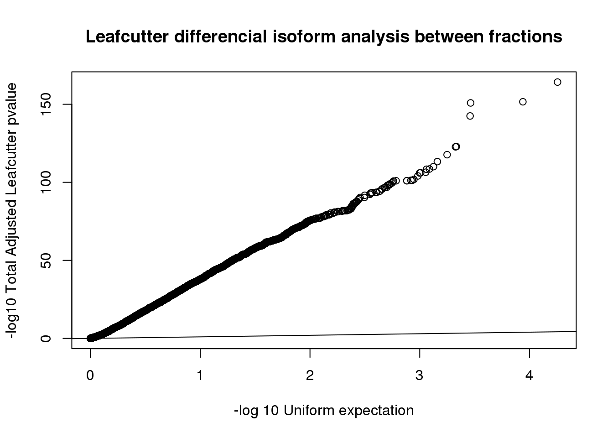
tested_genes=nrow(sig)
tested_genes[1] 9221sig_genes=sig %>% filter(p.adjust<.05)
number_sig_genes=nrow(sig_genes)
number_sig_genes[1] 6946sig_genesonly=sig_genes %>% separate(cluster,into=c("chrom", "geneName"), sep = ":") %>% dplyr::select(geneName)
write.table(sig_genesonly, file="../data/sigDiffGenes.txt", col.names = T, row.names = F, quote = F)Effect sizes
effectsize=read.table("../data/DiffIso/TN_diff_isoform_allChrom.txt_effect_sizes.txt", stringsAsFactors = F, col.names=c('intron', 'logef' ,'Nuclear', 'Total','deltaPAU')) %>% filter(intron != "intron")
write.table(effectsize,file="../data/DiffIso/EffectSizes.txt", quote = F, col.names = T, row.names = F)
effectsize$deltaPAU=as.numeric(as.character(effectsize$deltaPAU))
effectsize$logef=as.numeric(as.character(effectsize$logef))Plot delta PAU:
plot(sort(effectsize$deltaPAU),main="Leafcutter delta PAU", ylab="Delta PAU", xlab="PAS Index")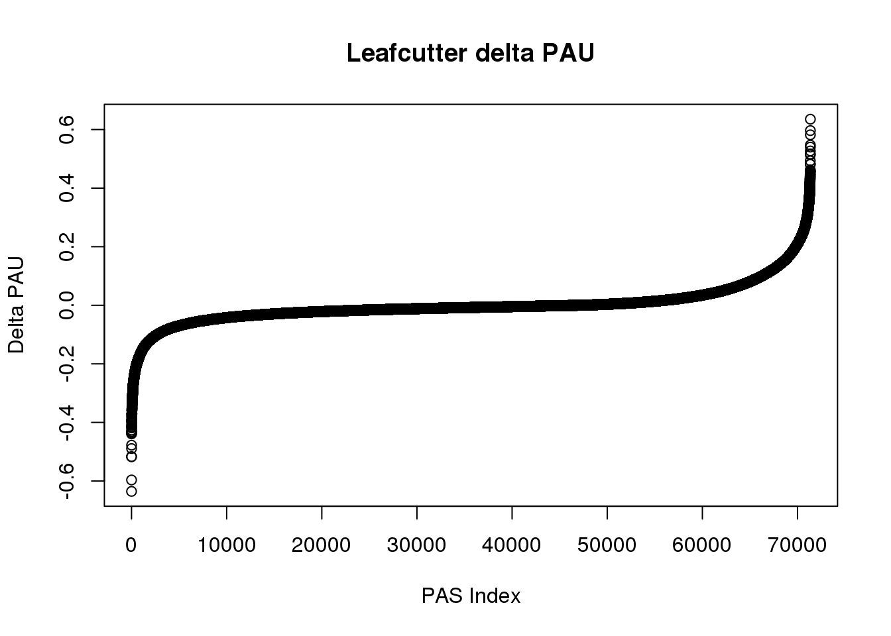
Filter PAU > .2
effectsize_deltaPAU= effectsize %>% filter(abs(deltaPAU) > .2)
nrow(effectsize_deltaPAU)[1] 1764effectSize_highdiffGenes=effectsize_deltaPAU %>% separate(intron, into=c("chrom", "start", "end", "GeneName"), sep=":") %>% dplyr::select(GeneName) %>% unique()
write.table(effectSize_highdiffGenes, file="../data/highdiffsiggenes.txt", col.names = F, row.names = F, quote = F)Genes in this set:
effectsize_deltaPAU_Genes= effectsize_deltaPAU %>% separate(intron, into=c("chrom", "start", "end","gene"),sep=":") %>% group_by(gene) %>% summarise(nperGene=n())
nrow(effectsize_deltaPAU_Genes)[1] 1334Filter >.2 in
effectsize_deltaPAU_nuclear= effectsize_deltaPAU %>% filter(deltaPAU < -0.2)
#write out at bed
#need strand info
PAS=read.table("../data/PAS/APAPAS_GeneLocAnno.5perc.bed", stringsAsFactors = F,col.names = c("chrom", "start", "end", "peak", "score", "strand") )%>% separate(peak, into=c("peaknum","peakID"), sep=":") %>% separate(peakID, into=c("gene", "loc"), sep="_") %>% dplyr::select(gene, strand) %>% unique()
effectsize_deltaPAU_nuclear_bed=effectsize_deltaPAU_nuclear %>% separate(intron, into=c("chr", "peakStart", "peakEnd", "gene"), sep=":") %>% inner_join(PAS, by="gene") %>% mutate(PASstart=ifelse(strand=="+", as.integer(peakEnd)-1, as.integer(peakStart)+1)) %>% mutate(PASend=ifelse(strand=="+", as.integer(peakEnd), as.integer(peakStart))) %>% mutate(score=".") %>% dplyr::select(chr, peakStart, peakEnd, gene, score, strand)
write.table(effectsize_deltaPAU_nuclear_bed, file="../data/PAS/UsedMoreNuclearPAU2.bed", col.names = F, row.names = F, quote = F,sep = "\t")Filter >.2 in Total:
effectsize_deltaPAU_total= effectsize_deltaPAU %>% filter(deltaPAU > 0.2)
effectsize_deltaPAU_total_bed=effectsize_deltaPAU_total %>% separate(intron, into=c("chr", "peakStart", "peakEnd", "gene"), sep=":") %>% inner_join(PAS, by="gene") %>% mutate(PASstart=ifelse(strand=="+", as.integer(peakEnd)-1, as.integer(peakStart)+1)) %>% mutate(PASend=ifelse(strand=="+", as.integer(peakEnd), as.integer(peakStart))) %>% mutate(score=".") %>% dplyr::select(chr, peakStart, peakEnd, gene, score, strand)
write.table(effectsize_deltaPAU_total_bed, file="../data/PAS/UsedMoreTotalPAU2.bed", col.names = F, row.names = F, quote = F,sep="\t")Sort the files:
sort -k1,1 -k2,2n ../data/PAS/UsedMoreTotalPAU2.bed > ../data/PAS/UsedMoreTotalPAU2.sort.bed
sort -k1,1 -k2,2n ../data/PAS/UsedMoreNuclearPAU2.bed > ../data/PAS/UsedMoreNuclearPAU2.sort.bedLocation of high >PAU
Total:
Pull in location information for each PAS:
PAS=read.table("../data/peaks_5perc/APApeaks.ALLChrom.Filtered.Named.GeneLocAnnoPARSED.5percCov.bothfrac.SAF",stringsAsFactors = F,header = T) %>% separate(GeneID, into=c("num", "chr", "start", "end", "strand", "geneID"), sep=":") %>% separate(geneID, into=c("gene", "loc"),sep="_") %>% mutate(intron=paste("chr", Chr, ":", Start, ":", End, ":", gene,sep="")) %>% select(intron, loc)effectsize_deltaPAU_total_loc=effectsize_deltaPAU_total %>% inner_join(PAS, by="intron")
ggplot(effectsize_deltaPAU_total_loc,aes(x=loc)) + geom_histogram(stat="count") + labs(title="Location of Total peaks >.2 PAU") Warning: Ignoring unknown parameters: binwidth, bins, pad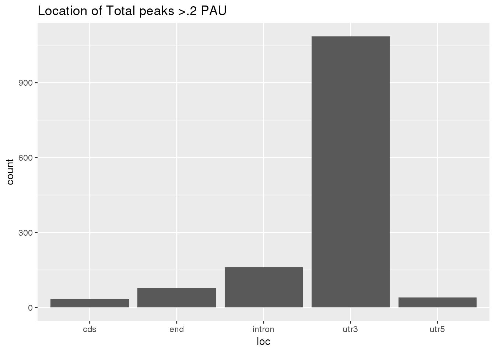
Nuclear:
effectsize_deltaPAU_nuclear_loc=effectsize_deltaPAU_nuclear %>% inner_join(PAS, by="intron")
ggplot(effectsize_deltaPAU_nuclear_loc,aes(x=loc)) + geom_histogram(stat="count") + labs(title="Location of Nuclear peaks >.2 PAU")Warning: Ignoring unknown parameters: binwidth, bins, pad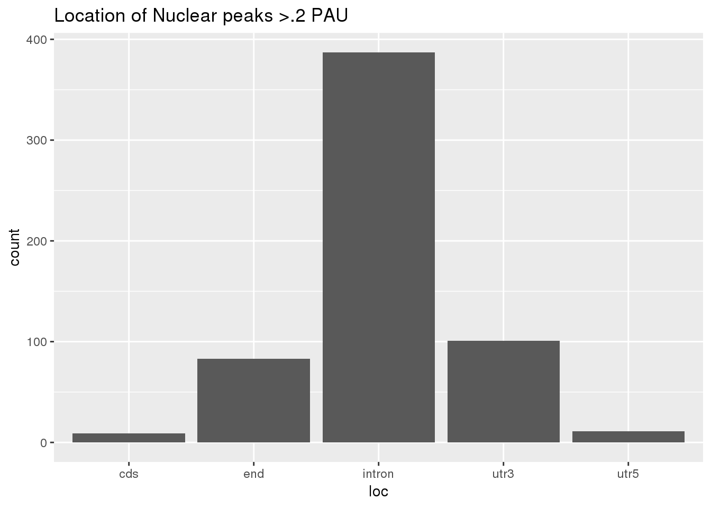
| Version | Author | Date |
|---|---|---|
| 9d0950c | brimittleman | 2019-06-13 |
I will want to look at proportions. I need to know how many peaks are in each location:
PAS_loc =PAS%>% group_by(loc) %>% summarise(nloc=n())effectsize_deltaPAU_total_locProp=effectsize_deltaPAU_total_loc %>% group_by(loc) %>% summarise(nloctotal=n())
effectsize_deltaPAU_nuclear_locProp=effectsize_deltaPAU_nuclear_loc %>% group_by(loc) %>% summarise(nlocnuclear=n())
effectsize_deltaPAUProp_tot=effectsize_deltaPAU_total_locProp %>% inner_join(PAS_loc, by="loc") %>% mutate(Proportion_tot=nloctotal/nloc)
effectsize_deltaPAUProp_nuc=effectsize_deltaPAU_nuclear_locProp %>% inner_join(PAS_loc, by="loc") %>% mutate(Proportion_nuc=nlocnuclear/nloc)ggplot(effectsize_deltaPAUProp_tot, aes(x=loc, y=Proportion_tot)) + geom_bar(stat="identity") + labs(y="Proportion of all called PAS", title="Location of high Total used PAS")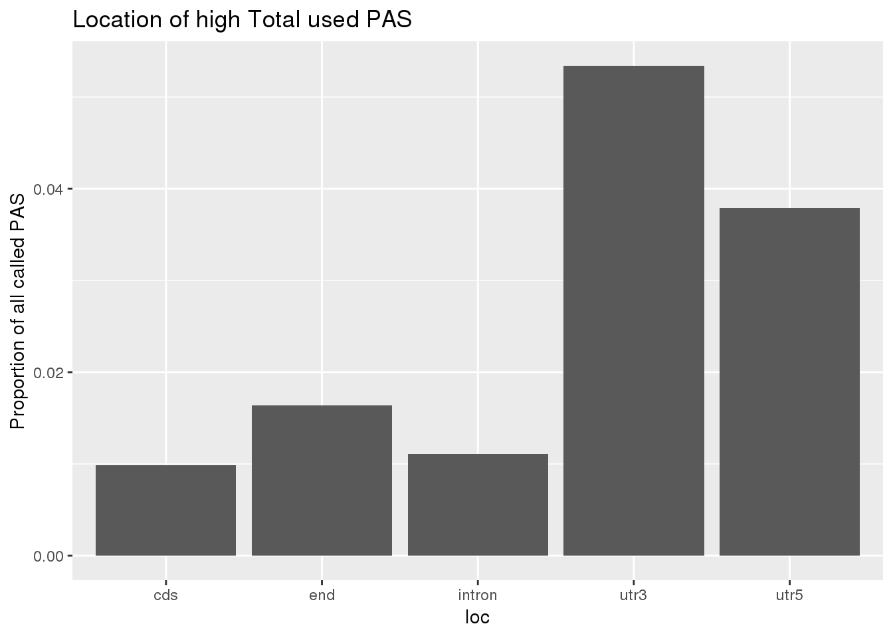
ggplot(effectsize_deltaPAUProp_nuc, aes(x=loc, y=Proportion_nuc)) + geom_bar(stat="identity") + labs(y="Proportion of all called PAS", title="Location of high nuclear used PAS")
| Version | Author | Date |
|---|---|---|
| 9d0950c | brimittleman | 2019-06-13 |
Merge to 1 figure:
effectsize_deltaPAUProp_both= effectsize_deltaPAUProp_nuc %>% inner_join(effectsize_deltaPAUProp_tot, by=c("loc","nloc")) %>% dplyr::rename(Nuclear=Proportion_nuc, Total=Proportion_tot) %>% select(loc, Nuclear, Total)
effectsize_deltaPAUProp_both_melt= effectsize_deltaPAUProp_both %>% melt(id.vars="loc", variable.name="Fraction", value.name = "Proportion")
effectsize_deltaPAUProp_both_melt$Fraction=as.character(effectsize_deltaPAUProp_both_melt$Fraction)ggplot(effectsize_deltaPAUProp_both_melt, aes(x=loc, y=Proportion, by=Fraction, fill=Fraction)) + geom_bar(stat="identity", position="dodge") + scale_fill_manual(values=c("deepskyblue3","darkviolet")) + labs(title="Proportion of PAS differential used by location",x="") +scale_x_discrete(labels = c('Coding','5kb downstream','Intronic',"3' UTR", "5' UTR")) +theme(axis.text.x = element_text(angle = 90, hjust = 1)) + theme(legend.position = c(0.1,.9), legend.direction = "horizontal") + theme(panel.background = element_blank()) 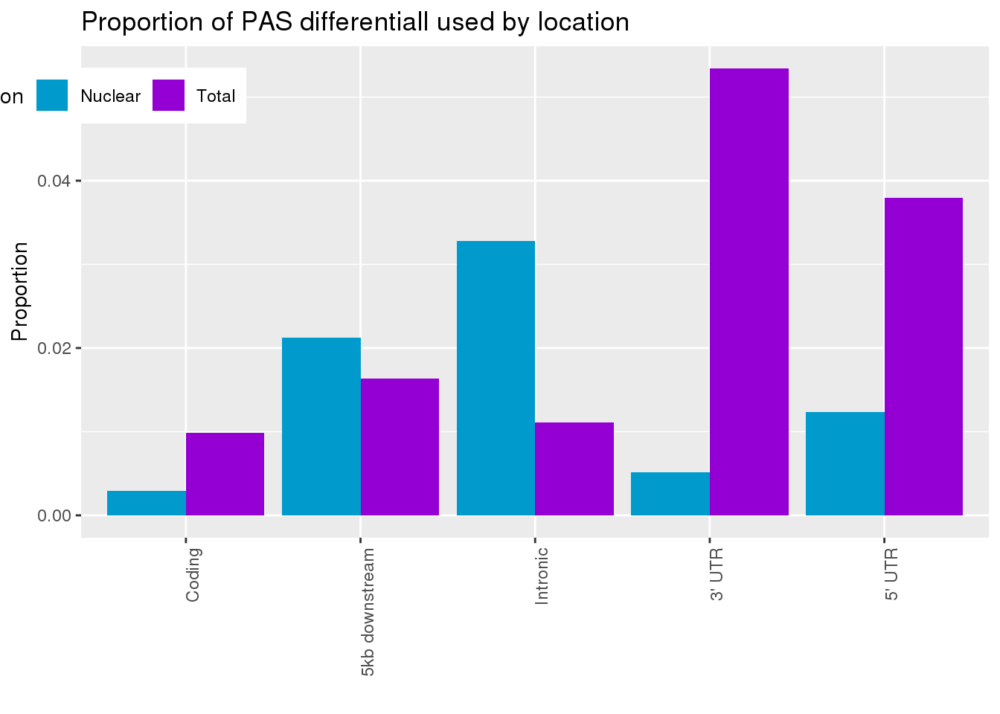
effectsize_deltaPAU_total_locProp# A tibble: 5 x 2
loc nloctotal
<chr> <int>
1 cds 30
2 end 63
3 intron 126
4 utr3 916
5 utr5 38sum(effectsize_deltaPAU_total_locProp$nloctotal)[1] 1173effectsize_deltaPAU_nuclear_locProp# A tibble: 5 x 2
loc nlocnuclear
<chr> <int>
1 cds 9
2 end 83
3 intron 387
4 utr3 101
5 utr5 11sum(effectsize_deltaPAU_nuclear_locProp$nlocnuclear)[1] 591effectsize_deltaPAUProp_both_melt_sm=effectsize_deltaPAUProp_both_melt %>% filter(loc=="intron" | loc=="utr3")
ggplot(effectsize_deltaPAUProp_both_melt_sm, aes(x=loc, y=Proportion, by=Fraction, fill=Fraction)) + geom_bar(stat="identity", position="dodge") + scale_fill_manual(values=c("deepskyblue3","darkviolet")) + labs(title="Differencially Used PAS",x="", y="Proportion of All PAS at Location") +scale_x_discrete(labels = c('Intronic',"3' UTR")) +theme(axis.text.x = element_text(angle = 45, hjust = 1)) + theme(legend.position ="bottom", legend.direction = "horizontal") + theme(panel.background = element_blank(),text = element_text(size=16), plot.title = element_text(size = 20, face = "bold"),axis.text.x = element_text(size=14),axis.text.y = element_text(size=14))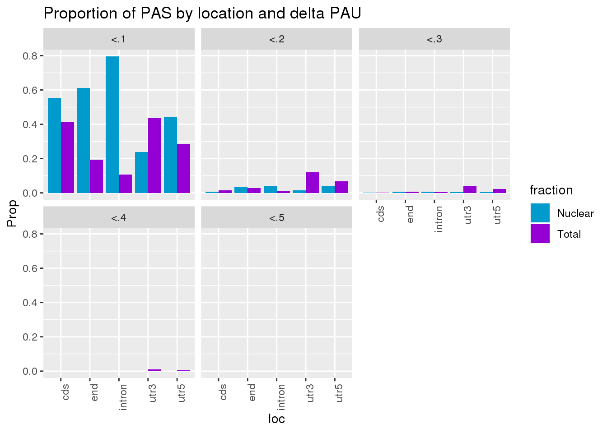
effectsize_deltaPAUProp_both_melt_sm loc Fraction Proportion
1 intron Nuclear 0.030250918
2 utr3 Nuclear 0.004996537
3 intron Total 0.009849136
4 utr3 Total 0.045315128#intronic
prop.test(x=c(387,126), n=c(591,1173),alternative = "greater")
2-sample test for equality of proportions with continuity
correction
data: c(387, 126) out of c(591, 1173)
X-squared = 568.34, df = 1, p-value < 2.2e-16
alternative hypothesis: greater
95 percent confidence interval:
0.5106946 1.0000000
sample estimates:
prop 1 prop 2
0.6548223 0.1074169 #3' utr
prop.test(x=c(101,916), n=c(591,1173),alternative = "less")
2-sample test for equality of proportions with continuity
correction
data: c(101, 916) out of c(591, 1173)
X-squared = 596.48, df = 1, p-value < 2.2e-16
alternative hypothesis: less
95 percent confidence interval:
-1.0000000 -0.5764348
sample estimates:
prop 1 prop 2
0.1708968 0.7809037 More differentiall used in total. this makes sense because there are more used peaks in the nuclear which evens out the distribution of the ratios.
Stratify by different \(\Delta\) PAU
I want to create a data frame that has the location proportion distribution based on different \(\Delta\) PAU. 0-.1 .1-.2 .2-.3 .3-.4 .4-.5 >.5
First I will seperate the total and nuclear but the sign of the \(\Delta\) PAU.
colnames(effectsize)=c("intron", "logef","Nuclear", "Total", "deltaPAU")
Total_dpau= effectsize %>% filter(deltaPAU > 0) %>% inner_join(PAS, by="intron") %>% select(-logef, -Nuclear,-Total) %>% mutate(fraction="Total", PAU_Cat=ifelse(deltaPAU <.1, "<.1", ifelse(deltaPAU >=.1 & deltaPAU <.2, "<.2", ifelse(deltaPAU >=.2 & deltaPAU <.3, "<.3", ifelse(deltaPAU >=.3 & deltaPAU <.4, "<.4", "<.5")))))
Nuclear_dpau= effectsize %>% filter(deltaPAU <0) %>% inner_join(PAS, by="intron") %>% select(-logef,-Nuclear,-Total) %>% mutate(fraction="Nuclear", PAU_Cat=ifelse(deltaPAU >-.1, "<.1", ifelse(deltaPAU <=-.1 & deltaPAU > -.2, "<.2", ifelse(deltaPAU <=-.2 & deltaPAU >-.3, "<.3", ifelse(deltaPAU <=-.3 & deltaPAU >-.4, "<.4", "<.5")))))Merge these together to start grouping:
allPAU=as.data.frame(rbind(Total_dpau, Nuclear_dpau)) %>% group_by(fraction, PAU_Cat, loc ) %>% summarise(nperLoc=n()) %>% full_join(PAS_loc, by ="loc") %>% mutate(Prop=nperLoc/nloc)Plot it:
ggplot(allPAU, aes(x=loc,y=Prop, group=fraction, fill=fraction)) + geom_bar(stat="identity", position = "dodge") + facet_wrap(~PAU_Cat)+ scale_fill_manual(values=c("deepskyblue3","darkviolet")) + theme(axis.text.x = element_text(angle = 90, hjust = 1)) + labs(title="Proportion of PAS by location and delta PAU")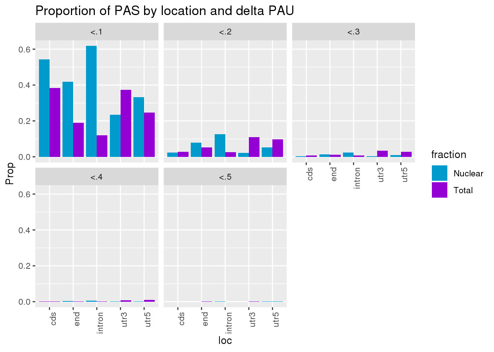
| Version | Author | Date |
|---|---|---|
| 3e79995 | brimittleman | 2019-06-24 |
allPAU_remove.1= allPAU %>% filter(PAU_Cat != "<.1")
ggplot(allPAU_remove.1, aes(x=loc,y=Prop, group=fraction, fill=fraction)) + geom_bar(stat="identity", position = "dodge") + facet_wrap(~PAU_Cat)+ scale_fill_manual(values=c("deepskyblue3","darkviolet")) + theme(axis.text.x = element_text(angle = 90, hjust = 1)) + labs(title="Proportion of PAS by location and delta PAU")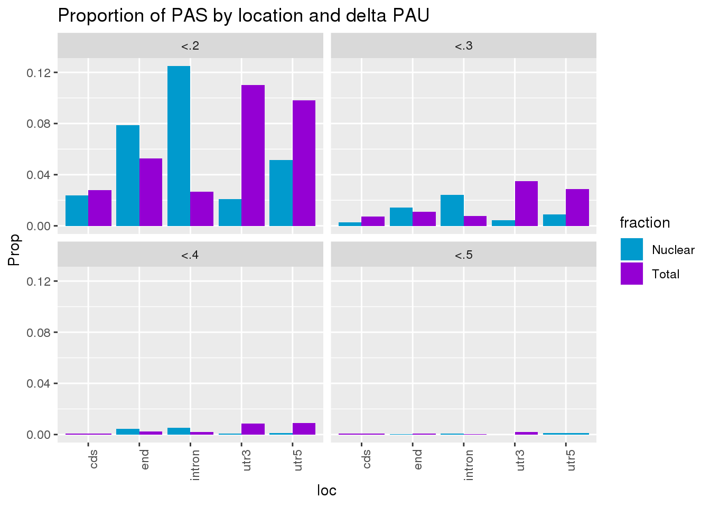
Proportion within group:
allPAU_ingroup= allPAU %>% mutate(nCat=sum(nperLoc),proppercat=nperLoc/nCat)
ggplot(allPAU_ingroup, aes(x=loc,y=proppercat, group=fraction, fill=fraction)) + geom_bar(stat="identity", position = "dodge") + facet_wrap(~PAU_Cat)+ scale_fill_manual(values=c("deepskyblue3","darkviolet")) + theme(axis.text.x = element_text(angle = 90, hjust = 1)) + labs(title="Proportion of PAS by location and delta PAU")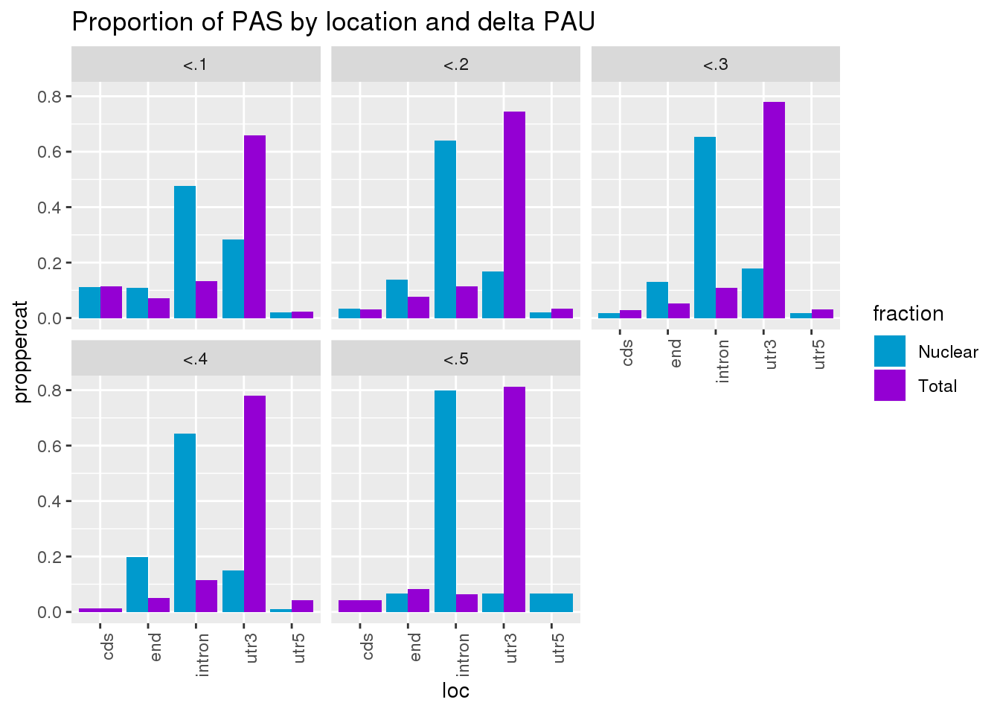
Distance to TSS:
I need to pull in the TSS information so I can look at the distance between the differentially used peaks and by distance .
tss=read.table("../../genome_anotation_data/refseq.ProteinCoding.bed",col.names = c("chrom", "start", "end", "gene", "score", "strand") ,stringsAsFactors = F) %>% mutate(TSS= ifelse(strand=="+", start, end)) %>% select(gene, TSS, strand)Seperate effect size introns:
PAS base for + strand is end, PAS for neg stand in -
effectsize_TSS= effectsize %>% separate(intron, into=c("chrom", "start", "end", "gene"),sep=":") %>% mutate(fraction=ifelse(deltaPAU < 0, "nuclear", "total")) %>% inner_join(tss, by="gene") %>% mutate(dist2PAS=ifelse(strand=="+", as.numeric(end)-as.numeric(TSS), as.numeric(TSS)-as.numeric(start)))
effectsize_TSS_tot= effectsize_TSS %>% filter(fraction=="total") %>% mutate( PAU_Cat=ifelse(deltaPAU <.1, "<.1", ifelse(deltaPAU >=.1 & deltaPAU <.2, "<.2", ifelse(deltaPAU >=.2 & deltaPAU <.3, "<.3", ifelse(deltaPAU >=.3 & deltaPAU <.4, "<.4", "<.5")))))
effectsize_TSS_nuc=effectsize_TSS %>% filter(fraction=="nuclear") %>% mutate( PAU_Cat=ifelse(deltaPAU >-.1, "<.1", ifelse(deltaPAU <=-.1 & deltaPAU > -.2, "<.2", ifelse(deltaPAU <=-.2 & deltaPAU >-.3, "<.3", ifelse(deltaPAU <=-.3 & deltaPAU >-.4, "<.4", "<.5")))))
effectsize_TSS_cat=as.data.frame(rbind(effectsize_TSS_tot, effectsize_TSS_nuc)) %>% filter(dist2PAS >0)ggplot(effectsize_TSS_cat, aes(x=log10(dist2PAS), by=fraction, fill=fraction))+ geom_density(alpha=.4) + facet_grid(~PAU_Cat) + labs(title="Distance to TSS for differentialy used PAS")+scale_fill_manual(values=c("deepskyblue3","darkviolet")) 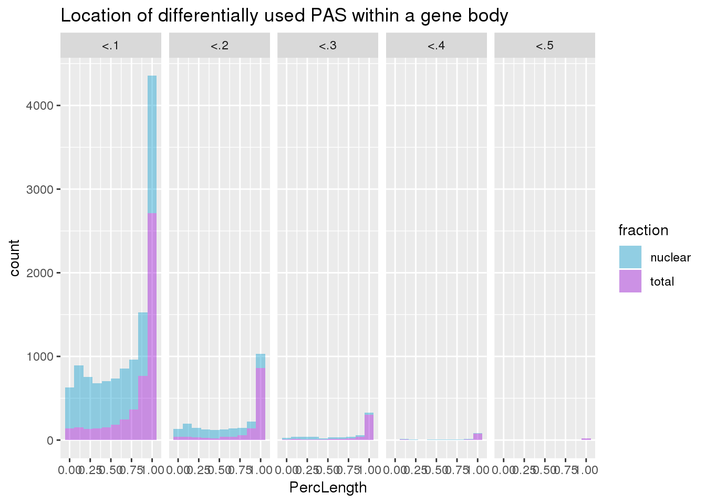
By length of gene
length=read.table("../../genome_anotation_data/refseq.ProteinCoding.bed",col.names = c("chrom", "start", "end", "gene", "score", "strand") ,stringsAsFactors = F) %>% mutate(length=abs(end-start)) %>% mutate(TSS= ifelse(strand=="+", start, end)) %>% select(gene, length,TSS, strand)effectsize_length= effectsize %>% separate(intron, into=c("chrom", "start", "end", "gene"),sep=":") %>% mutate(fraction=ifelse(deltaPAU < 0, "nuclear", "total")) %>% inner_join(length, by="gene") %>% mutate(PercLength=ifelse(strand=="+", ((as.numeric(end)-as.numeric(TSS))/as.numeric(length)), (1-(as.numeric(start)-as.numeric(TSS))/as.numeric(length))))
effectsize_length_tot= effectsize_length %>% filter(fraction=="total") %>% mutate( PAU_Cat=ifelse(deltaPAU <.1, "<.1", ifelse(deltaPAU >=.1 & deltaPAU <.2, "<.2", ifelse(deltaPAU >=.2 & deltaPAU <.3, "<.3", ifelse(deltaPAU >=.3 & deltaPAU <.4, "<.4", "<.5")))))
effectsize_length_nuc=effectsize_length %>% filter(fraction=="nuclear") %>% mutate( PAU_Cat=ifelse(deltaPAU >-.1, "<.1", ifelse(deltaPAU <=-.1 & deltaPAU > -.2, "<.2", ifelse(deltaPAU <=-.2 & deltaPAU >-.3, "<.3", ifelse(deltaPAU <=-.3 & deltaPAU >-.4, "<.4", "<.5")))))
effectsize_length_cat=as.data.frame(rbind(effectsize_length_tot, effectsize_length_nuc)) %>% filter(PercLength<=1 & PercLength >0)
effectsize_length_catall=as.data.frame(rbind(effectsize_length_tot, effectsize_length_nuc)) ggplot(effectsize_length_cat, aes(x=PercLength, by=fraction, fill=fraction))+ geom_histogram(alpha=.4,bins=10) + facet_grid(~PAU_Cat) + labs(title="Location of differentially used PAS within a gene body ")+scale_fill_manual(values=c("deepskyblue3","darkviolet")) 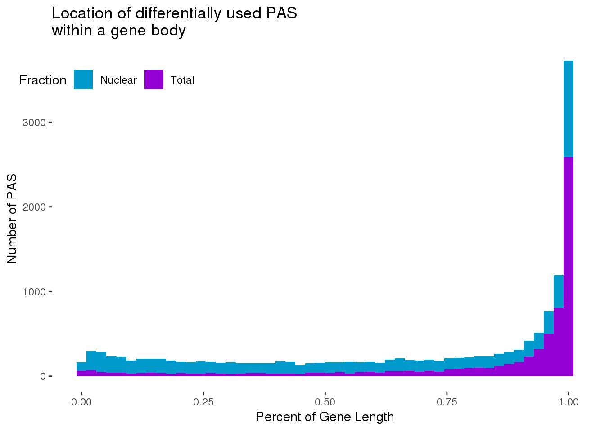
summary(effectsize_length_catall$PercLength) Min. 1st Qu. Median Mean 3rd Qu. Max.
-16763.99 0.89 1.04 22.93 1.91 86510.07 summary(effectsize$logef) Min. 1st Qu. Median Mean 3rd Qu. Max.
-2.241524 -0.319633 -0.006858 0.000000 0.329087 2.456682 ggplot(effectsize_length_cat, aes(x=PercLength, by=fraction, fill=fraction))+ geom_histogram(,bins=50) + labs(title="Location of differentially used PAS \nwithin a gene body", fill="Fraction", y="Number of PAS", x="Percent of Gene Length")+scale_fill_manual(values=c("deepskyblue3","darkviolet"),labels = c("Nuclear", "Total"))+ theme(legend.position = c(0.1,.9), legend.direction = "horizontal")+ theme(panel.background = element_blank())
| Version | Author | Date |
|---|---|---|
| 3e79995 | brimittleman | 2019-06-24 |
densitylocdifuse=ggplot(effectsize_length_cat, aes(x=PercLength, by=fraction, fill=fraction))+ geom_density(alpha=.75) + labs(title="Location of differentially used PAS \nwithin a gene body", fill="Fraction", x="Percent of Gene Length")+scale_fill_manual(values=c("deepskyblue3","darkviolet"),labels = c("Nuclear", "Total"))+ theme(legend.position = "bottom", legend.direction = "horizontal")+ theme(panel.background = element_blank(),text = element_text(size=16), plot.title = element_text(size = 20, face = "bold"))
densitylocdifuse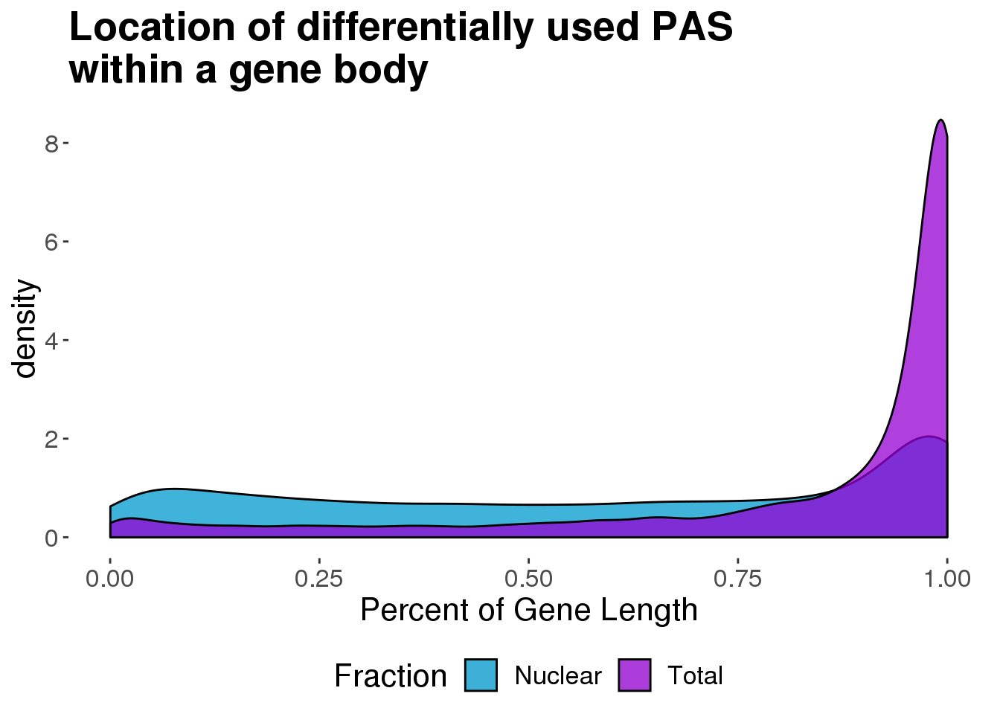
Diff iso gene proportion:
genes_sig=sig %>% separate(cluster,into=c("chr", "gene"), sep=":") %>% group_by(gene) %>% summarise(n=n()) %>% nrow
genes_detlapau= effectSize_highdiffGenes %>% nrow()
testedgenes=read.table("../data/DiffIso/APApeaks.ALLChrom.Filtered.Named.GeneLocAnnoPARSED.5percCov.bothfrac.fixed.forLC.fc",header = T, stringsAsFactors = F) %>% rownames_to_column("ID") %>% select(ID)%>% separate(ID, into=c("chr", "start", "end", "geneID"),sep=":") %>% separate(geneID, into=c("gene", "loc"),sep="_") %>% group_by(gene) %>% summarise(n=n()) %>% nrow()
notsig=testedgenes-genes_sig
sighothighpau=genes_sig-genes_detlapau
cat=c("NotSig", "SigNotHighPAU", "SigandHighPAU")
values=c(unlist(notsig),unlist(sighothighpau),unlist(genes_detlapau))
difiso_df=as.data.frame(cbind(cat, values))
difiso_df$values=as.numeric(as.character(difiso_df$values))
difiso_df=difiso_df%>% mutate(proportion=values/testedgenes)
ggplot(difiso_df, aes(x="",y=proportion, fill=cat)) + geom_bar(stat="identity")+geom_text(aes(label=values))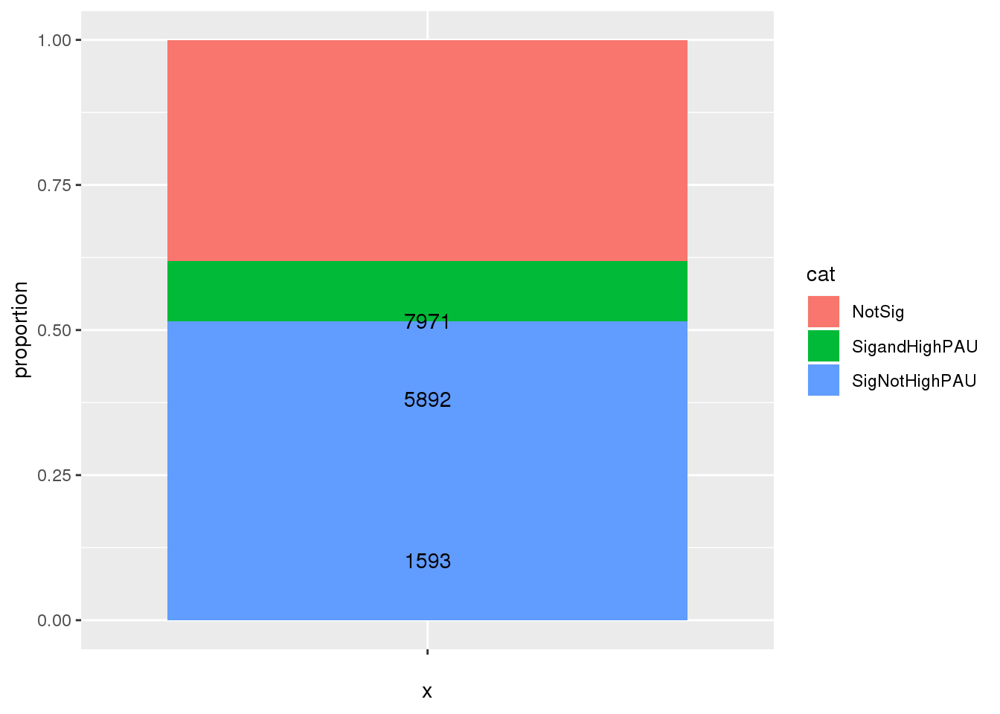
slices <- c(notsig, sighothighpau,genes_detlapau)
lbls <- c("No Sig PAS", "At least 1 \nSig PAS", "At least 1 Sig PAS\n High Delta PAU")
pct <- round(slices/sum(slices)*100)
lbls <- paste(lbls, pct, sep="\n ") # add percents to labels
lbls <- paste(lbls,"%",sep="") # ad % to labels
pie(slices, labels = lbls,col=c("Azure2", "Aquamarine1","Darkslateblue"))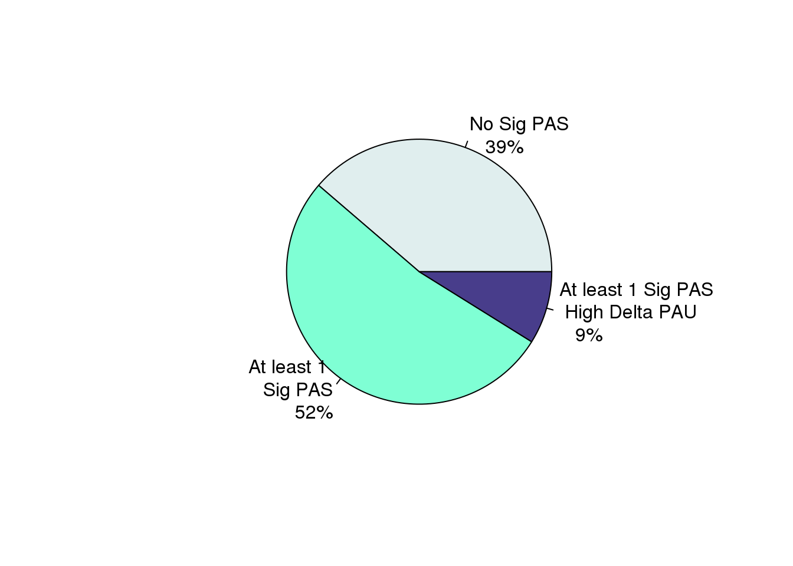
| Version | Author | Date |
|---|---|---|
| c5bf3fd | brimittleman | 2019-07-02 |
sessionInfo()R version 3.5.1 (2018-07-02)
Platform: x86_64-pc-linux-gnu (64-bit)
Running under: Scientific Linux 7.4 (Nitrogen)
Matrix products: default
BLAS/LAPACK: /software/openblas-0.2.19-el7-x86_64/lib/libopenblas_haswellp-r0.2.19.so
locale:
[1] LC_CTYPE=en_US.UTF-8 LC_NUMERIC=C
[3] LC_TIME=en_US.UTF-8 LC_COLLATE=en_US.UTF-8
[5] LC_MONETARY=en_US.UTF-8 LC_MESSAGES=en_US.UTF-8
[7] LC_PAPER=en_US.UTF-8 LC_NAME=C
[9] LC_ADDRESS=C LC_TELEPHONE=C
[11] LC_MEASUREMENT=en_US.UTF-8 LC_IDENTIFICATION=C
attached base packages:
[1] stats graphics grDevices utils datasets methods base
other attached packages:
[1] reshape2_1.4.3 forcats_0.3.0 stringr_1.3.1 dplyr_0.8.0.1
[5] purrr_0.3.2 readr_1.3.1 tidyr_0.8.3 tibble_2.1.1
[9] ggplot2_3.1.1 tidyverse_1.2.1 workflowr_1.4.0
loaded via a namespace (and not attached):
[1] Rcpp_1.0.0 cellranger_1.1.0 plyr_1.8.4 compiler_3.5.1
[5] pillar_1.3.1 git2r_0.25.2 highr_0.7 tools_3.5.1
[9] digest_0.6.18 lubridate_1.7.4 jsonlite_1.6 evaluate_0.12
[13] nlme_3.1-137 gtable_0.2.0 lattice_0.20-38 pkgconfig_2.0.2
[17] rlang_0.4.0 cli_1.1.0 rstudioapi_0.10 yaml_2.2.0
[21] haven_1.1.2 withr_2.1.2 xml2_1.2.0 httr_1.3.1
[25] knitr_1.20 hms_0.4.2 generics_0.0.2 fs_1.3.1
[29] rprojroot_1.3-2 grid_3.5.1 tidyselect_0.2.5 glue_1.3.0
[33] R6_2.3.0 fansi_0.4.0 readxl_1.1.0 rmarkdown_1.10
[37] modelr_0.1.2 magrittr_1.5 whisker_0.3-2 backports_1.1.2
[41] scales_1.0.0 htmltools_0.3.6 rvest_0.3.2 assertthat_0.2.0
[45] colorspace_1.3-2 labeling_0.3 utf8_1.1.4 stringi_1.2.4
[49] lazyeval_0.2.1 munsell_0.5.0 broom_0.5.1 crayon_1.3.4